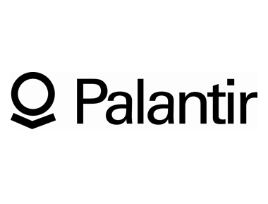

Chapter Four: The Unicorns
Unicorns are the top 1% of the top 1%, the once-in-a-decade. They either have a valuation of over $10 B, went public (IPO) or are just massive successes. Here are five examples that capture the imagination of entrepreneurs.
Xiaomi
Valuation $46.0B | Beijing | Founded 2010
Xiaomi designs, develops, and sells smartphones, mobile apps, and consumer electronics.
Uber
Valuation $41.2B | San Francisco | Founded 2009
Uber is an on-demand personal driver mobild app.

Airbnb
Valuation $13.0B | San Francisco | Founded 2008
Airbnb allows its users to "rent unique places to stay from local hosts in 190+ countries."

Palantir
Valuation $15.0B | Palo Alto | Founded 2004
Palantir is a big data company that offers software and services specialized in data analysis.
Valuation $200B | Harvard | Founded 2004
Facebook is a social network (web and mobile app) where people can connect with their friends.